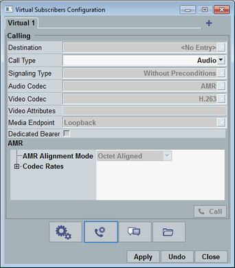

Mobile-terminating voice over IMS calls are configured and initiated via the "Virtual Subscribers Configuration" dialog box. Press the "Virtual Subscriber" hotkey to open the dialog box.
The dialog box provides several views. This section describes the view shown in the following figure. The highlighted button selects this view for display.

Most settings are grayed-out. They are taken from the virtual subscriber settings and displayed for information.
To initiate a call, proceed as follows:
Select a virtual subscriber tab at the top.
The related call settings are displayed.
Select the call destination and the call type.
Press the "Call" button.
For more detailed instructions, see "Setting Up a Mobile-Terminating Voice over IMS Call".
The view contents are described in the following.
Selects the destination to be called. The list is filled during registration.
Each destination indicates a contact ID in square brackets, the used signaling application, the signaling application instance and the subscriber profile.
Example: "[1] LTE1 - subscriber 1"
The contact ID is generated automatically when the UE registers. Its purpose is to distinguish between destinations with the same signaling application and subscriber profile.
Remote command:Selects the type of call to be set up: audio call or video call.
Remote command:The "Call" button initiates a voice over IMS call to the DUT.
The dialog box is closed automatically. You can check the call state in the "Events" area of the main view.
Remote command: